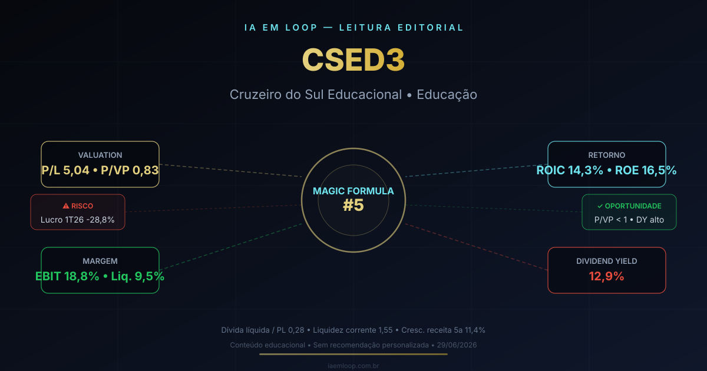

29/06: CSED3, educação e a armadilha do barato
CSED3 é a maior posição da carteira real Magic Formula e aparece entre as primeiras do ranking. P/L de 5,04, P/VP de 0,83 e Dividend Yield de 12,9% parecem uma combinação irrecusável. Mas o lucro do 1T26 caiu 28,8%, analistas cortaram a recomendação e a ação acumula queda de 37% no ano. Quando o valuation é obviamente barato, é hora de comprar — ou de perguntar por que o mercado está cobrando esse desconto?

CSED3 é o tipo de empresa que a Magic Formula identifica automaticamente: P/L baixo, retorno razoável e preço abaixo do patrimônio. O desafio é separar o que é barganha do que é armadilha de valor.
Resposta curta: barato com razão — o desconto precisa de prova
CSED3 (Cruzeiro do Sul Educacional) combina indicadores que chamam atenção: P/L de 5,04, P/VP de 0,83 e Dividend Yield de 12,9%, segundo dados do Fundamentus consultados em 29/06/2026. Na carteira real Magic Formula do IA em Loop, CSED3 é a segunda maior posição: 34 unidades a preço médio de R$ 4,29, representando cerca de 11,6% da carteira.
Mas por trás dos múltiplos atrativos, há sinais de alerta. O lucro líquido do 1T26 caiu 28,8% em relação ao mesmo período anterior, conforme reportagem do Estadão. O BofA (Bank of America) rebaixou a recomendação para a ação em junho de 2026, enquanto elevou a concorrente Vitru (VTRU3) para compra. A ação acumula queda de 37,17% em 12 meses e de 43,8% desde a entrada na carteira real. O mercado está dizendo algo que o P/L sozinho não captura.
O que a Magic Formula está capturando
A Magic Formula procura empresas que combinem qualidade (retorno sobre capital) e preço baixo (earnings yield elevado). Em CSED3, o preço é visivelmente baixo: a empresa vale menos do que o patrimônio contábil (P/VP 0,83) e o P/L de 5,04 sugere que o mercado está pagando pouco pelo lucro atual. O ROIC de 14,3% e o ROE de 16,5% são razoáveis, embora não tão altos quanto os de empresas de capital leve como WIZC3. O DY de 12,9% é elevado, o que sugere pagamento robusto ou preço deprimido — ou ambos.
A leitura do IA em Loop é que CSED3 combina dois elementos clássicos de value trap: múltiplos muito baixos e fundamentos se deteriorando. A empresa atua em educação — setor com pressão regulatória, competição por alunos e custo de captação elevado. Quando o lucro cai enquanto o valuation parece barato, o investidor precisa decidir se está diante de uma oportunidade ou de um espelho quebrado.
| Sinal | Leitura prática | O que monitorar |
|---|---|---|
| P/VP 0,83 | Preço abaixo do patrimônio contábil | Se o VPA (R$ 4,53) reflete ativos reais ou intangíveis inflados |
| P/L 5,04 | Preço aparentemente baixo para o lucro | Se o lucro do 2T26 reverte a queda ou confirma deterioração |
| DY 12,9% | Distribuição relevante em relação ao preço | Se o dividendo é sustentável ou se a empresa está pagando além do caixa |
| Lucro 1T26 -28,8% | Queda significativa de resultado | Se a pressão veio de despesas, queda de receita ou ajuste pontual |
| BofA cortou recomendação | Analistas enxergam risco elevado | Se a reavaliação reflete risco setorial ou empresa-específico |
Educação: setor de alto retorno ou ciclicidade disfarçada?
O setor educacional brasileiro tem características que enganam investidores de valor. As empresas frequentemente apresentam margens brutas altas (CSED3: 51,1%) e receitas recorrentes de mensalidades. Isso parece durável. Porém, a captação de alunos exige investimento comercial crescente, inadimplência varia com o ciclo econômico, e a regulação do FIES, Prouni e créditos estudantis pode alterar a base de receita de um trimestre para outro. A aparente estabilidade pode evaporar rápido.
A Cruzeiro do Sul tem matriz presencial e digital. A questão central é: o modelo educacional da empresa é suficientemente eficiente para manter margem EBIT de 18,8% e ROE de 16,5% em cenário de pressão sobre matrículas e despesas crescentes? Os dados do 1T26 sugerem que não, ou pelo menos que há pressão temporária — e temporária é a premissa mais arriscada em valuation.
Conceito: value trap (armadilha de valor) — Quando uma ação parece barata pelos múltiplos (P/L, P/VP) mas o lucro ou o caixa estão em tendência de queda. O valuation baixo não é oportunidade; é o mercado antecipando que os fundamentos vão piorar mais do que o preço já reflete. A saída é checar a qualidade do lucro, não apenas o múltiplo.
A pergunta que decide a tese: o desconto é explicável ou é excesso de medo?
CSED3 vale 0,83 vezes o patrimônio contábil. Isso pode significar que o mercado está errado e a ação está barata — ou que o patrimônio inclui ativos (marcas, goodwill, carteira de alunos) que não valem o valor contábil em cenário de stress. A receita cresceu 11,4% ao ano nos últimos 5 anos, o que sugere expansão real, mas a queda de lucro no 1T26 indica que parte desse crescimento pode estar sendo comprada com mais despesa do que retorno.
A resposta de hoje é: o desconto é parcialmente explicável pela queda de lucro e pelo rebaixamento de analistas, e parcialmente por risco setorial que o P/L sozinho não captura. A tese só melhora se a empresa demonstrar que a queda do 1T26 é pontual e que as margens se estabilizam.
O lado bom
P/L 5,04 e P/VP 0,83 são múltiplos que raramente aparecem em empresas lucrativas. DY de 12,9% é atrativo. Dívida líquida / patrimônio de 0,28 é baixa. Liquidez corrente de 1,55 dá folga de curto prazo. Crescimento de receita em 5 anos de 11,4%. A posição na carteira real Magic Formula (11,6%) mostra skin in the game.
O lado perigoso
Lucro do 1T26 caiu 28,8%. BofA cortou recomendação. Ação acumula -37% em 12 meses. Margem líquida de 9,5% é modesta. P/VP abaixo de 1 pode refletir intangíveis superavaliados. Setor educacional tem risco regulatório e cíclico. Pressão sobre matrículas e despesas pode persistir.
Estudo, entrada gradual ou espera?
Para carteira nova: CSED3 merece estudo aprofundado, mas os múltiplos baixos não devem ser tratados como sinal automático de compra. A queda de lucro e o rebaixamento por analistas indicam que o mercado enxerga risco material. A entrada, se existir, precisa ser gradual e condicionada à recuperação do lucro no 2T26.
Para quem já tem: a carteira real Magic Formula do IA em Loop já carrega CSED3 como segunda maior posição. A pergunta não é "comprar porque caiu"; é verificar se a deterioração do lucro é temporária ou estrutural. Se as margens se estabilizam e o ROE se mantém acima de 15%, a tese aguenta. Se o lucro continua caindo, o P/VP de 0,83 pode virar 0,60 e o DY de 12,9% pode ser insustentável.
Gatilhos positivos: lucro do 2T26 revertendo a queda, manutenção de margem EBIT acima de 15%, ROE estável acima de 15%, dividendos cobertos por caixa operacional e retomada de matrículas. Gatilhos negativos: nova queda de lucro, aumento de inadimplência, redução de margem abaixo de 12%, dividendos pagos com caixa de balanço ou nova emissão, e corte adicional de recomendação por analistas.
Leitura IA em Loop
CSED3 ilustra exatamente o que a Magic Formula promete e o que ela não resolve: encontrar empresas baratas é o primeiro passo; distinguir barganha de armadilha é o segundo. Os múltiplos são atrativos, mas a queda de lucro, o rebaixamento por analistas e a pressão setorial sugerem que o desconto tem explicação. A tese fica interessante se a Cruzeiro do Sul provar que a queda do 1T26 é pontual e que a máquina educacional continua gerando caixa. Até lá, a leitura correta é: valuation barato, dividendos altos e risco material de continuidade da deterioração. Barato não é sinônimo de compra — é convite para investigar.